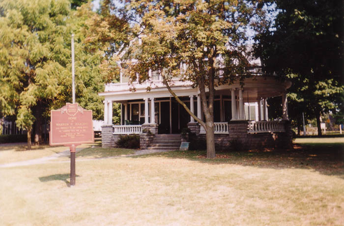
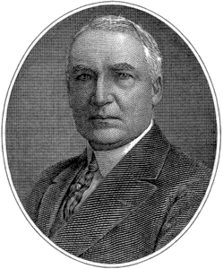
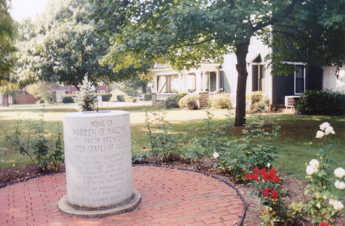
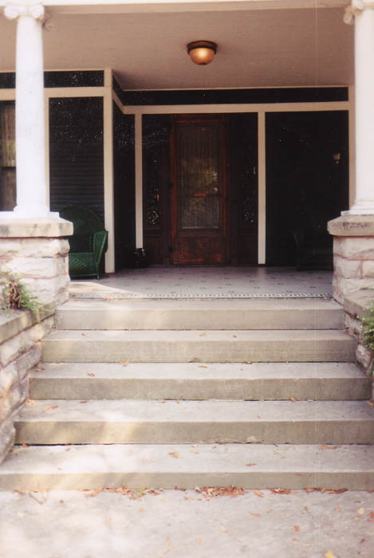

Warren Gamaliel Harding, 29th President of the United States, was born near Marion, Ohio, in 1865 and later lived in this house on Mt. Vernon Avenue. It was from here that he ran for President in 1920. Harding had previously been a newspaper publisher (he founded the Marion Star) and a U.S. Senator. He was known to like the ladies, and married a divorcee named Florence Kling DeWolfe who was a good ten years older than him. Rumor had it that he had black ancestors; kids used to tease him when he was in grade school by calling him "Nig." And he was not very bright.
Harding's benefactor, Harry M. Daugherty, got him nominated through a famous Machiavellian technique where he set Harding up as the compromise candidate when the leaders were deadlocked at the Republican convention. In a "smoke-filled room" late at night, Daugherty proposed Harding and got his nomination voted in. Then Harding defeated his opponent, Ohio governor James M. Cox, and was inaugurated in January 1921.

Harding, previously America's dumbest and least-competent president, got where he was mostly through Daugherty's promotion and his stately good looks. He appointed a largely corrupt cabinet, headed by Attorney General Daugherty, which came to be known as the Ohio Gang. They did all sorts of corrupt things--most notably engineering the Teapot Dome scandal--while Harding played cards and gambled away the White House china (I am not making this up). Harding mangled the English language in his speeches, famously making up the word "normalcy," and was at a total loss when it came to dealing with issues of policy. In 1923, during a budget meeting, he said, "I don't know what to do or where to turn in this taxation matter. Somewhere there must be a book that tells all about it, where I could go to straighten it out in my mind. But I don't know where the book is, and maybe I couldn't read it if I found it."

Warren Harding died in San Francisco in August 1923 from a heart attack, making Calvin Coolidge president. He was buried in his hometown. Does his spirit still roam the halls of his Marion home?

Above you see the porch from which Harding delivered his campaign speeches. Unlike today, candidates of the past could choose to conduct "front porch" campaigns in which they never left their home town and had voters come to them. Amazingly, many presidents won their elections this way.
Inside this house, which today is a national landmark and tourist attraction, Harding's spirit is said to walk. Several employees and tour guides here have reported hearing footsteps or catching sight of the President himself, and clocks are supposed to do odd things sometimes. Harding's spirit is not violent, however.
Legends also suggest that the Harding memorial in the cemetery nearby is haunted, but a specific story on this one is harder to pin down.
The Harding Home is located at 380 Mt. Vernon Avenue in Marion, and is open to tours during the warm months--usually Tuesday through Sunday. You can call (740) 387-9630 for details.
White House.gov: Warren G. Harding
CSPAN American Presidents: Warren G. Harding
Back